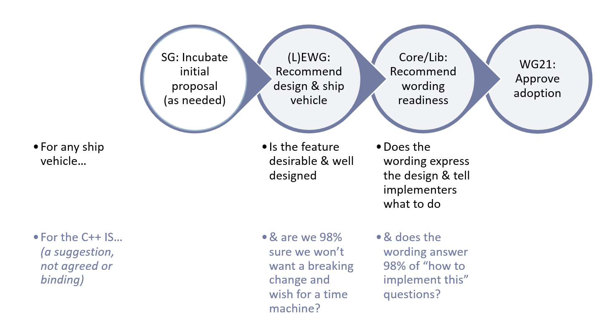

This is a summary of how a proposal progresses from “cool idea” to “international standard.”
The two major levels a proposal has to go through is to get approval from the “design” groups (Evolution Working Group aka EWG, and/or Library Evolution Working Group aka LEWG) and the “wording” groups (Core Working Group aka CWG, and/or Library Working Group aka LWG). Here’s an overview, where the bottom “criteria for adopting work into the C艹 IS trunk itself” is just a rough guideline suggestion and will vary by people's comfort with the proposal.

Every proposal goes through multiple stages. The smaller and less controversial a proposal, the faster it goes, possibly completing multiple stages in one meeting. The larger or more controversial a proposal, the more deliberate the handling, possibly needing multiple meetings for one stage (especially stages 2, 5, and 7).
0. Cool idea posted to a blog, mailing list, Reddit, etc. (Most proposals never make it past this stage.)
1. Proposer submits an initial design paper, and asks to present it to the design group. Paper includes motivation, alternatives considered, concrete examples, and a specific proposal in sufficient detail to evaluate.
2. Design group agrees they are interested in this area and pursuing exploration of this general feature, and asks for revisions. (A standalone proposal is usually iterated on at multiple meetings to refine the design. If there are competing proposals, the iteration and convergence takes longer. If there is a lot of iteration required and work can be done at additional face-to-face or telecon meetings between meetings, the design group chair may recommend starting a Study Group for the topic to produce a merged initial proposal to bring back to the design group.)
3. Design group agrees to pursue a specific refined design direction, and asks for initial wording.
4. Design group approves the initial wording, and forwards to wording group.
5. Wording group reviews and refines wording, agrees it’s ready to be included in a working draft, and forwards it to the full committee.
6. The full committee agrees to adopt the wording into a working draft, and creates an issues list to track issues. (If the work is to be put in its own TS, this would be an initial working draft for a new TS.)
7. Design and wording groups process design and wording issues to refine the specification, and forward each change for approval by the full committee. (The wording must correctly express the approved design; any questions about what specific code examples are supposed to mean must be resolved in design and be reflected in wording; the wording must be clear so that implementers know what to implement, and that programmers can write portable code that works the same way on different implementations.)
8. The full committee sends the working draft out for international comment ballot beyond the committee, and a few months later ballot comments are forwarded back to the committee.
9. Design and wording groups resolve ballot comments, and forward each change for approval by the full committee.
10. The full committee sends the working draft out for its final approval ballot and/or publication.
11. If the proposal is first published in a TS, then after getting beta feedback (usually including experience with a vendor implementing the feature and users trying out the implementation) someone will propose adopting it into the IS working draft, possibly with changes based on usage feedback, and after design and wording stability evaluation in the design and wording groups, repeat Stages 6-10 to “IS quality” (usually much faster than the first time since typically most of the work was done in the TS).
Conceptions and misconceptions
Note that there are two common mistakes, or at least misconceptions:
- A lot of people outside the committee think they’re done at Stage 0 or 1, and think that the committee will just run with their idea. Don’t expect anything to happen until a detailed design paper exists with a champion who will personally present it to the committee and contribute work on it to incorporate feedback and refine the proposal.
- Newer proposers tend to think they’re done at Stage 4 and declare victory, with the idea that the wording groups will just go ahead and ‘make it happen’ and ‘do the right thing.’ The usual mindset that leads to this mistake is thinking that the proposal is now “80% done”… that may be true from a design point of view, but the remaining stages form the “other 80%” (just sayin’!) of the essential work required to actually move it further forward all the way to becoming a high-quality detailed and implementable published specification. — And when we’re overly optimistic about “almost done” features shipping “in a year or so,” it’s usually because we’ve forgotten the actual cost and latency of Stages 5-10.
Experienced proposers understand that they have to personally remain involved and contribute substantial amounts of work up to and including Stage 7, and only then guardedly declare victory while still carefully watching ballot comments related to their proposal during the remaining stages.